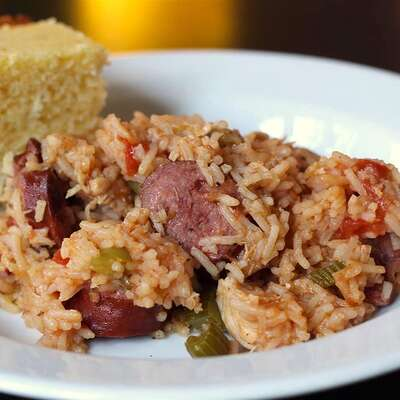

Mardi Grass Food

Steps to make Mardi Grass Food
Step 1
Bring a large pot of lightly-salted water to a boil. Season the chicken with salt and cook in the boiling water until no longer pink in the center, 7 to 10 minutes. Transfer to a large platter and allow to cool completely in refrigerator. Shred into small pieces once cooled.
Step 2
Combine the shredded chicken, ginger, jalapeno pepper, cucumber, basil, mint, cilantro, lemon grass, and peanuts in a large mixing bowl; toss until evenly distributed. Whisk together the fish sauce, lime juice, sugar, sesame oil, and peanut oil in a small bowl; add to the chicken mixture and mix with your hands until evenly coated.
Step 3
Fill a shallow pan with hot water. Dip the rice paper wrappers in the hot water until soft one at a time. Spread the rice paper onto a clean, flat surface. Place 1 leaf of lettuce into the center of a sheet of rice paper; spread about 1/3 cup of the chicken mixture onto the lettuce leaf. Fold the bottom end of the rice paper over the top of the mixture and then roll into a cylinder. Repeat until all ingredients are used. Cut into halves to serve.